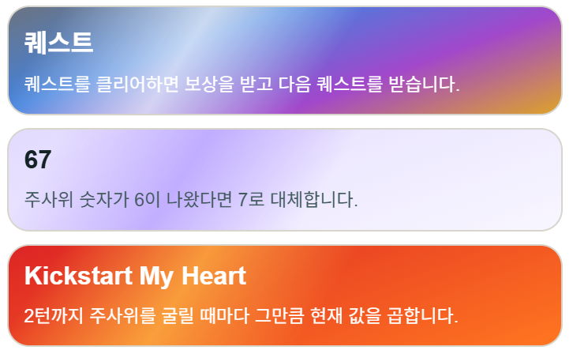
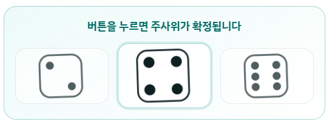
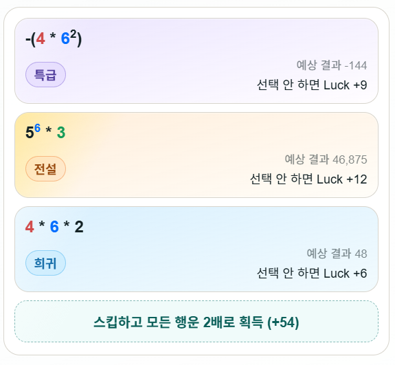
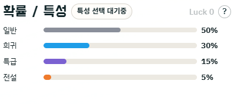
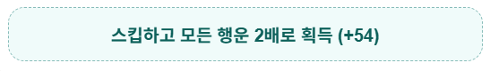

DB : "Disconnected"
가장 큰 숫자를 만드세요!
점수
계산 기록
아직 계산 기록이 없습니다.
-
현재 턴 주사위 값
턴
0 / 5
특성
특성을 선택해주세요.
Luck 0
Luck 동작 구조
선택지를 고를 시, 버린 옵션들에 적힌 만큼 Luck이 올라갑니다.
스킵 시 등장했던 모든 선택지의 2배의 Luck을 획득합니다.
Luck의 수치만큼 가장 낮은 등급의 확률이 감소하고,
Luck/3만큼 다른 등급의 확률이 증가합니다.
소수점은 절삭되며, 부족한 만큼 전설 확률에 먼저 더해집니다.
즉, 스킵할수록 높은 등급 선택지가 더 자주 등장합니다.
패치노트를 불러오는 중...

게임 시작 시 3개의 특성 중 하나를 선택합니다. 특성마다 고유한 효과가 있으며, 전략적으로 플레이 방향이 달라집니다.

기본 진행
시작 버튼을 누르면 시작 점수를 주사위로 굴려 결정하고, 5턴 게임이 시작됩니다.매 턴마다 주사위를 굴려 3개의 선택지 중 하나를 골라 점수를 변경합니다.

선택지 등급
선택지는 공통 / 희귀 / 특급 / 전설 4개의 등급으로 나뉩니다. 등급이 높을수록 강력한 계산식이 등장합니다.

행운 (Luck)
선택지를 고를 때 버린 선택지의 행운값만큼 Luck이 올라갑니다.Luck이 높을수록 희귀·특급·전설 등급 선택지가 더 자주 등장합니다.

스킵
선택지를 고르는 대신 스킵할 수 있습니다. 스킵 시 점수는 변하지 않고, 등장한 모든 선택지의 행운 합계 × 2를 획득합니다.
닉네임으로 유저의 기록을 검색해보세요.
불러오는 중...